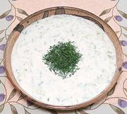

|
Cucumber Yogurt SoupBulgaria / Greece / etc. - Tarator (Bulgaria) Taratori (Greece) | ||||
| Makes: Effort: Sched: DoAhead: |
4-1/2 cups ** 2+ hrs Yes |
A refreshing chilled soup, made through the Balkans, Anatolia, and the Levant, with some differences in spelling. | |||
|
1 1/2 ----- 1 1 2 1 1/3 1/4 ----- 2 1/2 ----- ar |
# t --- oz cl T T t t --- c c --- |
Cucumbers (1) Salt -- Flavorings Walnut Meats Garlic Olive Oil Wine Vinegar, wht Salt Pepper ------------ Yogurt (2) Water -- Garnish Dill or Mint |
Make: - (20 min + 2 hours chilling)
|